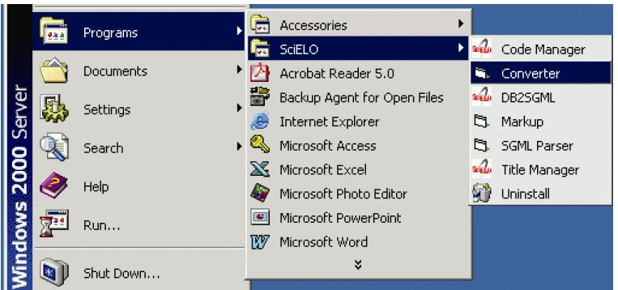
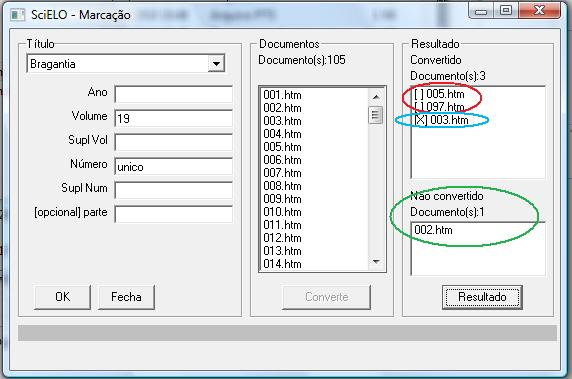
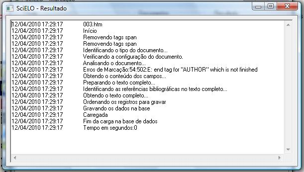
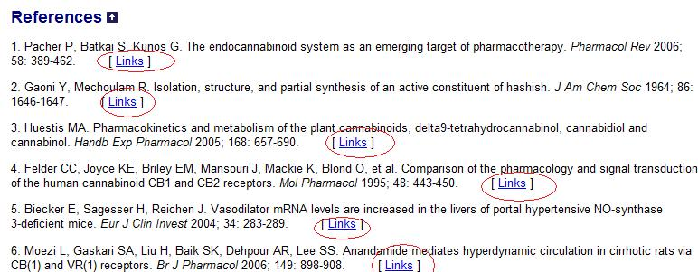
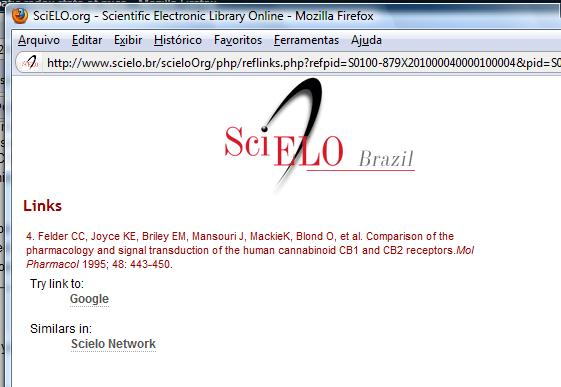
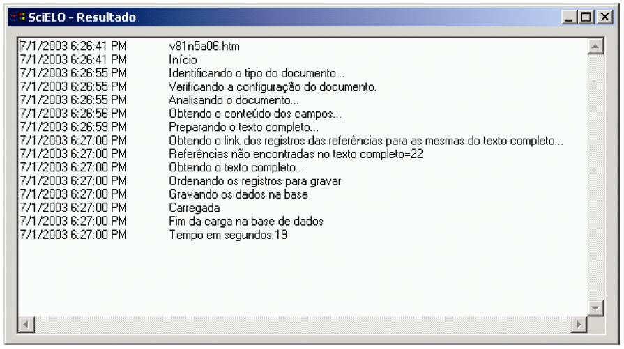
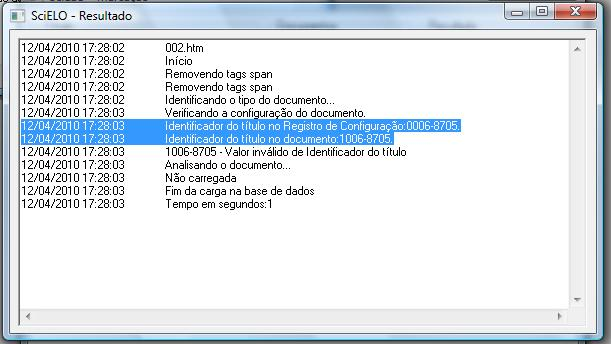

Converter¶
- single-user program built in Visual Basic, to use only by a centralized server, denominated [wiki:en_SciELO_Metodologia_Conceitos#servidorLocal local server]. Only one installation by [wiki:en_SciELO_Metodologia_Conceitos#instanciaSciELO SciELO collection or instance].
- Converter reads the files in markup and body, and the databases in title and issue, then generates a ISIS database in base folders.
Opening the program¶

Checking the program version¶
To check the version of the program, see [wiki:en_SciELO_PCPrograms_Comum#VerVersao Show program version].
Changing the interface language¶
To change the language of the program interface, see [wiki:en_SciELO_PCPrograms_Comum#Alterar_idioma_interface Change interface language].
Running the program¶
Select ‘’‘Files’‘’.

Fill the fields:
journal’s title: select the title of the journal.
year: FILL ONLY if it is AHEAD or REVIEW number
volume: fill it in with the volume
supplement of volume: fill it in with the supplement of volume, if it exists
number: fill it in with the number. If it is an ahead or review/provisional number, use ‘’‘ahead’‘’ or ‘’‘review’‘’, respectively
supplement of number: fill it in with the supplement of number, if it exists
part: fill it in, if it exists. Recently it is used to ‘’press release’‘, fill it in with ‘’‘pr’‘’.

Click on ‘’‘OK’‘’ button.
Converter uses these data to identify the issue’s, [wiki:en_SciELO_Metodologia_Conceitos#Estrutura_das_pastas markup and body] folders. If the data are correct, the program will list the markup files.

Click on ‘’‘Converter’‘’ button.
- Converter will convert the selected files. [[BR]]
For each file, the program : - extracts the marked data - compares the issue’s data in the markup file and in the issue database, managed by ([wiki:en_SciELO_PCPrograms_Title_Manager_ISSUE Title Manager / issue]).
If there is some conflicting data, the data are not converted to the database. It is a fatal error. The user must check and correct the data in the markup document (using Markup program) and/or in issue database (using Title Manager).
If the issue’s data is correct, the files are converted to the database and the result will be shown on the screen.
Results: - successfully converted: [], in red. - converted, with errors: [X], in blue before its name. They have some markup errors, but not fatal enough to avoid conversion. For example, markup error, probably identified by Parser, but not corrected by the user. - not converted: at the inferior part, in green. It is usually related to issue’s data, such as ISSN, abbreviated title, volume and number, which do not match in the markup file and in the issue database.
- Clicking on each file in the result area and then on ‘’‘Result’‘’ button, the user can see how the conversion run.
Successfully converted:

Converted, but no fatal error: markup error
Converted, but no fatal error: some bibliographic references not identified
Converter locates each bibliographic reference of the markup file in the body file, identifying the points where ‘’‘[Links]’‘’ must be inserted at the article page, in the website.
Clicking on ‘’‘[Links]’‘’, a window is open to display a list of links to the referenced fulltext.
If there are bibliographic reference location errors, Converter will present the result bellow:
Not converted, because of fatal errors:
